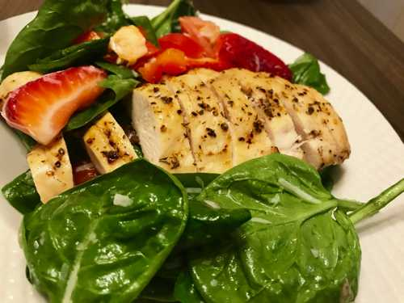

                                    <figure class="cards double">                                        
                                        <figcaption class="caption">
                                        
                                            <!--  Copy your recipie in here -->
                                            <h1><span style="color: #0000FF;"><strong>Grilled Chicken Salad</strong></span></h1>

                                            <p><strong>Ingredients:</strong></p>
                                            <ul>
                                                <li>Boneless Chicken Breasts</li>
                                                <li>Baby Spinach</li>
                                                <li>Tomatoes</li>
                                                <li>Strawberries</li>
                                            </ul>
                                            <p>&nbsp;<strong>Marinade for Chicken:</strong></p>
                                            <ul>
                                                <li>Oregano</li>
                                                <li>Basil</li>
                                                <li>Garlic</li>
                                                <li>Salt</li>
                                                <li>Pepper</li>
                                            </ul>
                                            <p><strong>Salad seasoning:</strong></p>
                                            <ul>
                                                <li>Lemon juice</li>
                                                <li>Olive oil</li>
                                                <li>Crushed red peppers</li>
                                                <li>Garlic</li>
                                                <li>Salt</li>
                                                <li>Pepper</li>
                                            </ul>
                                            <p>Marinate chicken with the ingredients listed and keep it aside for about an hour. Bake chicken for 20 to 30 minutes on 450 deg F turning sides half way through. In a bowl throw in the Baby Spinach, Tomatoes and Strawberries. In another small bowl mix the salad seasoning ingredients.</p>
                                            <p>Add the seasoning to the vegetables and toss them all together.</p>
                                            <p>When the chicken is cooked take it off the oven and slice them.</p>
                                            <p>Spoon the salad on to a bowl and place the sliced chicken on top.</p>

                                            <!-- Copy Up to here-->

                                        </figcaption>
                                        
                                    </figure>
                                    
                                    